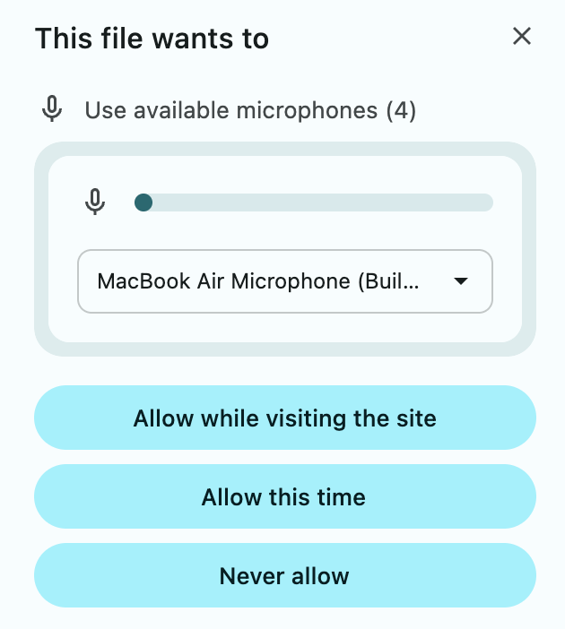

In today’s study, you will interact with a chat system.
The system you will be interacting with for this experiment can answer questions about work, health, and general facts.
For this study, you will need to be able to see the full screen and listen to audio.Before we begin, you’ll need to set up your environment.
Below, click to confirm you have met these environment requirements:
Press the "Record" button below to record yourself asking the question out loud.
Play the audio below. You can adjust the volume on your device until it is at a comfortable listening level.
Important! Please keep the level the same throughout the experiment.
After listening, please answer the question below.
During the experiment, you will need to grant microphone access to record your voice.
You will see a dialog like this and have to accept it:
Please click "Continue" below to grant microphone access.
Let's test your microphone to make sure it's working properly.
Click "Record" and say a few words, then click "Stop" to hear your recording played back.
The system can answer questions about work, health, and general facts.
On each trial, you will be presented with a question (e.g., “How far away is the moon?”) that you must verbally ask the system. You will click the 'Ask' button, ask the question, and press 'Stop' when done. The system will then provide a verbal response.
Your task will be to rate the system's response:
There are no right or wrong answers.
Let's do a quick practice trial to make sure everything is working. Press the "Record" button below to record yourself asking the question out loud.
Before starting the task, please complete the short speaking exercise below.
Important:
The Rainbow Passage
When the sunlight strikes raindrops in the air, they act like a prism and form a rainbow. The rainbow is a division of white light into many beautiful colors. These take the shape of a long round arch, with its path high above, and its two ends apparently beyond the horizon. There is, according to legend, a boiling pot of gold at one end. People look but no one ever finds it. When a man looks for something beyond his reach, his friends say he is looking for the pot of gold at the end of the rainbow.
Now, we want you to answer some questions about the system that you just interacted with.
Untrustworthy ~ Trustworthy
Tool ~ Collaborator
Please rate your impression of the system on the following items.
Now please answer these questions about yourself.